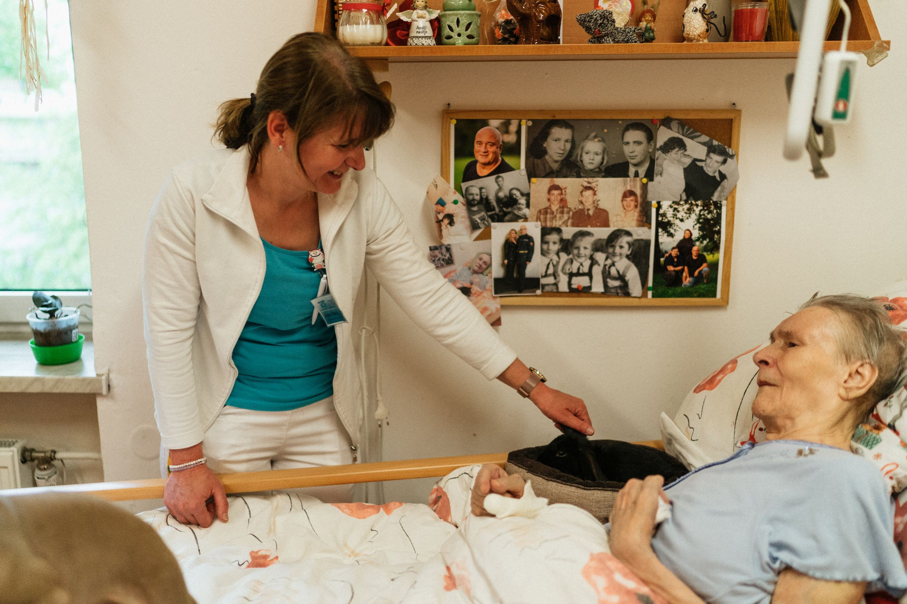
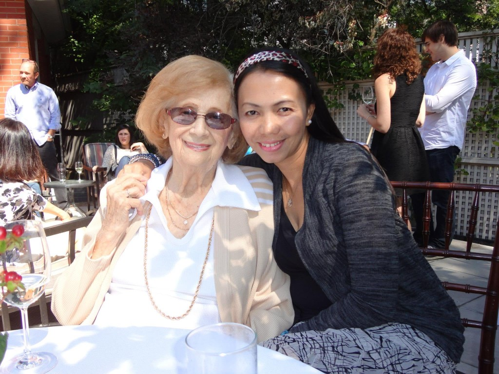

Listen first
We take time to understand the client’s routines, preferences, care plan, and family concerns.
About us
Lynn’s Caregiving Services provides compassionate, non-medical in-home care for people who need dependable support with daily living.

Founded in 2026 by Ridchalyn Peralta, the service is built on 15 years of hands-on experience as a Personal Support Worker (PSW). Over the course of her career, Ridchalyn has supported vulnerable seniors, individuals with disabilities or special needs, recovering patients, and clients requiring respite or palliative support.
That experience shaped a clear standard for care: every client should be treated with respect, patience, dignity, and genuine compassion.
To improve quality of life while supporting comfort, safety, independence, and dignity at home.
We believe good caregiving should feel personal, dependable, and respectful — not rushed or impersonal.
Care that starts with listening and stays focused on the person receiving support.
We take time to understand the client’s routines, preferences, care plan, and family concerns.
Care is tailored to the individual rather than using a one-size-fits-all approach.
We support clients in doing as much as they safely can for themselves.
Families should feel informed and know who to contact when questions or concerns arise.
Management and PSWs coordinate closely to support reliable, consistent care.
These values guide how we support clients and how we work with families.
We care about the person, not just the task.
We understand the responsibility families place in a caregiver.
We aim to provide dependable support and clear communication.
We expect respectful conduct, appropriate certifications, and client-centered care.
Ridchalyn Peralta, Personal Support Worker and founder of Lynn’s Caregiving Services.

Founder & Personal Support Worker
Caregiving has been the focus of Ridchalyn’s career for 15 years. She founded Lynn’s Caregiving Services in 2026 to bring that experience into a service built around compassion, dignity, reliability, and respectful support for clients and their families.
Contact Lynn’s Caregiving Services to discuss the support your loved one needs at home.